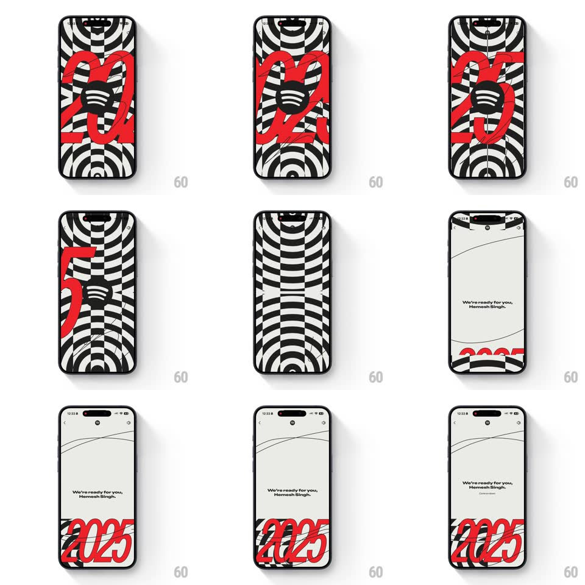

Media
Frame-by-frame

Rebuild this animation 1:1: Spotify Wrapped 2025's intro - a warped black-and-white op-art checkerboard spins and floods the screen around a huge red "2025", then resolves to the personalized welcome.

Rebuild this animation 1:1: Spotify Wrapped 2025's intro - a warped black-and-white op-art checkerboard spins and floods the screen around a huge red "2025", then resolves to the personalized welcome.
## Integration
Integration: stack-agnostic spec - springs given as stiffness/damping, timed motions as duration + curve; map every value to your framework and animation library of choice.
## Scene
A cream field with a warped op-art checkerboard (black/white, curved like a flag in wind), a giant red "2025" in a stretched custom face, and the Spotify logo. End state: the same cream field quieted, sketch-thin line art, the copy "We're ready for you, Hemesh Singh." and the red 2025 docked at the bottom.
## Motion spec
Pattern: op-art vortex intro collapsing into a personalized welcome.
- The checkerboard starts docked at the screen's bottom edge, slowly rippling; the red 2025 slides up over it (translateY 60 -> 0, 500ms, ease-out).
- The vortex hits: the checkerboard warps and spins up from the edges (scale 1 -> 2.2 with rotation ~90deg, 900ms, ease-in) until the pattern floods the whole screen, the red digits strobing through it (2025 fragments sliding across in 300ms cuts).
- Peak chaos holds 400ms, then the pattern whips down and off (600ms, ease-in-out) like a tablecloth pulled away.
- The quiet welcome lands: copy fades in line by line ("We're ready for you," then the name, 150ms apart), sketch lines draw across (stroke reveal, 600ms), and the red 2025 slides up into its bottom dock (spring ~300/18).
## Calibration
- The palette never leaves cream/black/red - the energy comes from motion, not color count.
- The name is the point of the scene - it must land after the chaos, in the calm.
## Reduced motion
Skip the vortex: the 2025 fades up, then crossfades to the welcome (400ms).
## Don't miss
- The checkerboard is warped, never flat - straight grids kill the op-art feel.
- "We're ready for you" reads like a stage announcement - the year was the show, now it's yours.